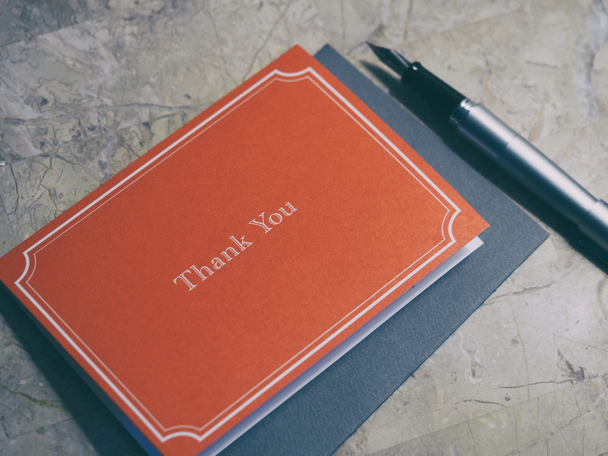

I've ever been surprised, even amused, by the show of affection friends show in myself. Caring about myself has never been a high priority for me, I admit, so I emotionally recoil whenever an external being cares about my wellbeing more than me. I cannot comprehend it, on an emotional level of course as logically it is natural for friends to care about each other.
What surprises me the most is the long-lasting effect I may have on people who I have barely crossed their paths during my life. People who I shared 20 words on a party 8 months ago, people who are friends of a friend that don't talk among themselves much either, go figure with me. People who work at my same place and that we bump into each other once every 2 weeks. These kind of people. Not even acquaintances. Less than that.
Yet these people are the ones who most surprise me by sending me birthday wishes every year, by liking my photos on Instagram, by commenting on my Facebook timeline (and I barely use Facebook). I keep wondering: what did I say or do that made them remember me? I had an extremely small chance to make an impression on them, I didn't even try to, yet apparently I made a good one, and a lasting one.

Why so? I don't know.
Perhaps it has to do with the uniqueness of myself. Don't get me wrong, I am as average as anybody. I'm not smarter, more beautiful, classier or richer than whomever may happen to read this blog. I haven't accomplished anything truly remarkable in life. Not yet, I like to add. There's nothing in my past or my role in society that would make anybody remember of me even after months after a brief and occasional encounter.
My conclusion is that I am somehow different. A mix of different aspects of my person is something that is not often met nowadays, and it causes a lasting impression in others. Namely, I am a metalhead but I dress very classy, very much outside of what same aged men would, go figure real metalheads. Think of a Nick Cave as of style but singing like Rob Halford. Perhaps this befuddles somebody. To me it has always been natural as I don't want to choose how to dress according to a "tribe" or a predefined group. I am more than that.
Perhaps it has also to do with being a programmer but taking care of himself. Aesthetically. And not being obsessed with nerdy things, not having a bedroom filled with Star Wars posters, Stallman quotes and a Rubik cube in a corner. My bedroom is quite minimalistic, as my way of dressing, which conflicts with the general idea people have of a metalhead or a programmer. Add that I'm not your average cis white male (I'm from the south of Italy and I am brown skinned), nor that I watch what is popular (those Avengers movies make me cringe), nor read what is currently trending (give me a book about the Mongol art of war anytime over the latest women empowering novel), nor listen to what is considered the current frontier of music (95% of all hiphop is pure trash as two thirds of modern metal), and you have a concoction of features that escape an easy definition.
Perhaps it is all this. Or perhaps it is something altogether different. I may never know for sure. None of my closer friends ever told me straightly what they find truly interesting in me. I am thus guessing.
I am though grateful to all the appreciation I received and continue to receive by friends and people who are way less than that. Especially the latter. I truly am. I don't believe much in life itself, I do find it a long succession of painful events intermixed with brief happiness. Yet I'd value the little appreciation I receive from near complete strangers as one of the most important source of that brief happiness that life sometimes is able to give us. I may never get why I have it but I do cherish it.
Tweet Go Top
comments powered by Disqus